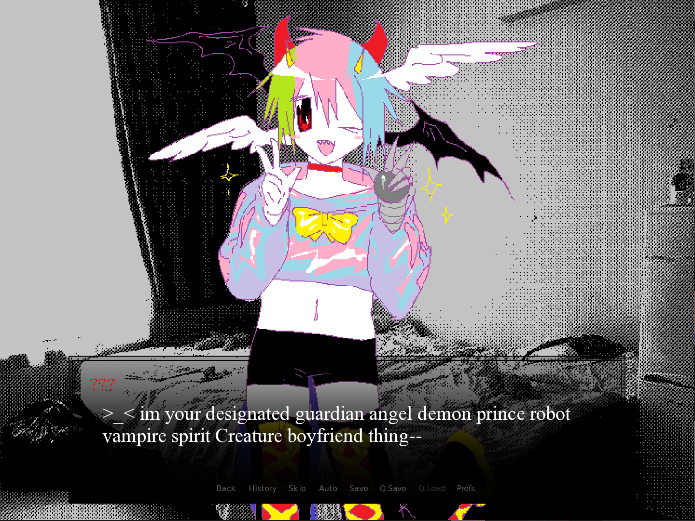
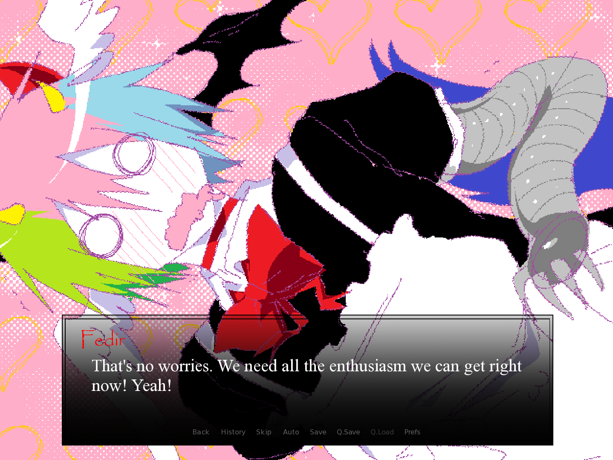

job hunting 9000 deluhx - довольно необычная новелла из-за того, что она высмеивает времена Мэри Сью и всемогущих ОС.
Начало игры
Экран ноутбука рябит вкладками сайтов по поиску работы, где от соискателя требуют нереалистичный опыт и горы навыков. Герой судорожно пытается составить хоть какое-то подобие резюме. Внезапно монитор начинает глитчить, выдавать графические артефакты и мигать ядовитыми цветами. Из цифрового шума, словно материализовавшись прямо из забытой папки со старыми рисунками или закрытого треда на форуме, в комнате появляется xX_YAOITRON9000_Xx.

Плюсы ! 💚
- Искрометная постирония и интернет-юмор: Игра виртуозно пародирует клише фанфикшна 2000–2010-х, нелепые тропы яндере/оверпауэр ОС, веб-эстетику девиантарта и симуляторы свиданий.
- вариативность: Для инди-проекта небольшого масштаба здесь внушительное число сюжетных развилок, побочных путей и концовок.
- Уникальный визуальный почерк.
Минусы ! 🍎
- Зависимость от контекста: Если вы не застали эпоху фэндомов 2000-х Мэри Сью и кричащих оккультно-анимешных персонажей, часть шуток вы можете не понять.
- Ограниченный саунд-дизайн: Музыка состоит преимущественно из бесплатных треков, которые местами звучат повторяющеся на длинных ветках.
Параметры игры ★
Оценка ключевых элементов
9.5
10
6.0
7.0
Вердикт автора:
Игра идеально подходит тем, кто ценит самоироничные веб-новеллы, мем-культуру и не боится визуальных экспериментов.